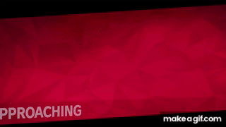

Dduvivie's prowess in Mario Kart is the stuff of legends. With lightning-fast reflexes and a sixth sense for every banana peel and rogue Koopa shell, she dominates the racetrack like a warrior princess from a parallel dimension. Her competitors gasp in awe as she effortlessly drifts around corners, leaving a trail of sparkling stardust in her wake
Beyond her Mario Kart skills, she also received a Nobel Prize in ecology for inventing toilets for penguins, finally restoring the long-forgotten hygiene and dignity of these birds of the far north. This invention was hailed by the world's greatest leaders.
But wait, there's more to Dduvivie's incredible story! In addition to her Mario Kart mastery and groundbreaking penguin toilets, she embarked on yet another audacious adventure that left the world both baffled and amused.
Dduvivie, fueled by her insatiable thirst for the absurd, took it upon herself to solve one of life's greatest mysteries: the elusive dance moves of giraffes. Yes, you read that correctly. Armed with a pair of oversized sunglasses and a boombox blasting funky tunes, she journeyed to the heart of the African savannah to uncover the truth behind those long-necked creatures' hidden grooves.
As she approached a group of curious giraffes, they swayed their heads in rhythm, eager to witness this human's outrageous mission. Dduvivie, undeterred by the towering heights of her new dance partners, began her groundbreaking experiment. With every step, she showcased dance moves never before seen by human or giraffe eyes.
From the "Tall and Twirl" to the "Neck Extend Noodle," Dduvivie unleashed a repertoire of moves that defied the laws of physics and brought joy to the animal kingdom. Giraffes gathered from miles around, joining in the dance frenzy, their long necks swaying in harmony with Dduvivie's outlandish choreography.
News of the dancing phenomenon spread like wildfire. National Geographic reporters scrambled to capture this extraordinary spectacle, while renowned scientists scratched their heads in bewilderment. The world's greatest dance troupes even tried to recruit Dduvivie, hoping to infuse their performances with the surreal elegance of giraffe-inspired moves.
And so, Dduvivie became a legend not only in Mario Kart and ecological innovation but also in the realm of giraffe dance. She had single-handedly elevated the dance scene to new heights, quite literally. Her infectious energy and ability to coax even the most reserved giraffes into shaking their long legs transformed her into a global sensation.
Today, Dduvivie's legacy lives on. Mario Kart racetracks are forever marked by her stardust, penguins waddle to the beat of her toilet invention, and giraffes across the savannah engage in spontaneous dance parties. Her impact on the world is a testament to the power of imagination, absurdity, and the pursuit of making life just a little bit more ridiculous and delightful.
